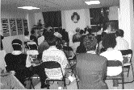

[Montréal]Le nouveau Centre de Montréal a organisé récemment deux séminaires en aulacien et un en chinois afin de partager les enseignements de Maître avec le public. Le séminaire a commencé par une visite guidée du Centre où les créations artistiques de Maître étaient exposées. Les initiés ont présenté les activités de l'Association Internationale de Maître Suprême Ching Hai, par une série de portraits photos. Pendant ce temps, les cuisiniers préparaient pour les invités des plats végétariens et des boissons délicieuses qu'ils ont servis après le séminaire.
Sous la direction de Maître, les vrais aspirants se sont rassemblés pour écouter Ses enseignements. Certains qui avaient participé au séminaire en aulacien, sont également venus à celui en chinois. Certains même avec des amis, se sont intéressés aux enseignements de Maître et ont regardé Ses conférences vidéos. Dans cette atmosphère positive, plusieurs invités ont voulu apprendre la méthode pratique de méditation et ont acheté des livres afin de pouvoir approfondir Ses enseignements à la maison.
Le Centre de Montréal prépare actuellement un séminaire pour les occidentaux. À travers les séminaires, les initiés ont appris à améliorer leur travail en équipe, s'aider les uns, les autres pour progresser rapidement, solidement dans cette voie spirituelle.
|  | Les enseignements de Maître diffusés par les vidéos lors des séminaires ont aidé de nombreuses personnes à trouver le vrai sens de la vie. |